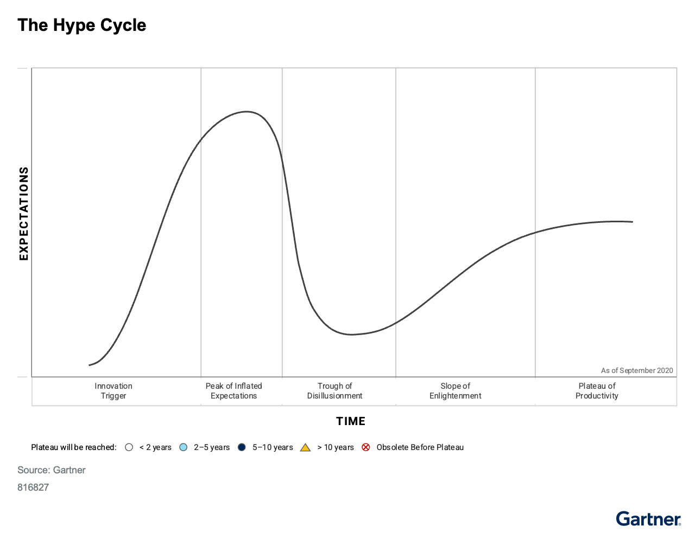
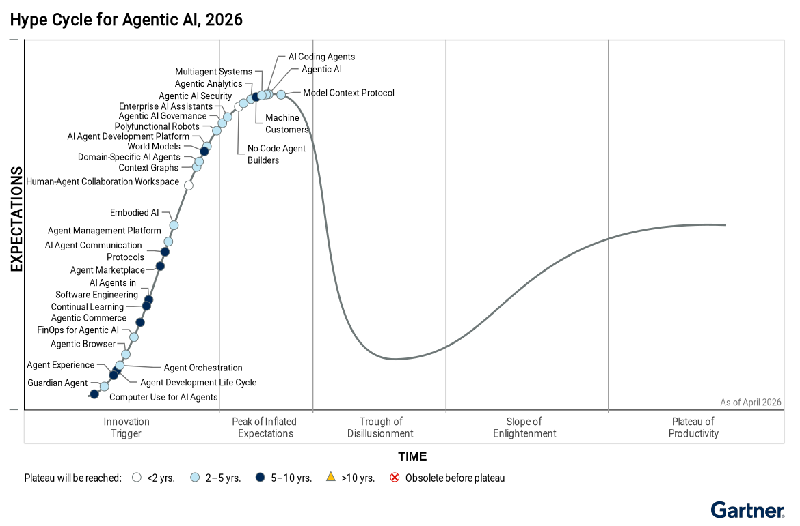

하이프 사이클은 신기술의 성숙도와 채택 수준, 사업 문제 해결 적합성을 한 장의 곡선으로 보여준다. 모든 기술이 같은 속도로 움직이지는 않는다. 그래서 위치만 볼 것이 아니라, 효용과 위험을 함께 따져야 한다. Gartner는 이때 우선순위 매트릭스를 함께 쓰라고 제시한다.
핵심 요약
조직은 신기술을 너무 일찍 들이거나 너무 빨리 포기하는 실수를 반복한다. 반대로 너무 늦게 도입하거나 효용이 다한 기술을 오래 붙드는 경우도 있다. 하이프 사이클Hype Cycle — 신기술이 과도한 기대, 실망, 재평가를 거쳐 주류로 자리 잡는 과정을 그린 Gartner의 프레임워크.은 이런 함정을 피하게 돕는다. 금융IT처럼 규제와 안정성이 중요한 조직일수록 기술의 위치와 효용, 위험 성향을 같이 봐야 한다.

크게 보기Gartner’s Hype Cycle graph is essential for tracking the maturity and potential of innovations for various clients. The Hype Cycle comprises five phases — Innovation Trigger, Peak of Inflated Expectations, Trough of Disillusionment, Slope of Enlightenment and Plateau of Productivity.
Gartner’s Hype Cycle graph is essential for tracking the maturity and potential of innovations for various clients. The Hype Cycle comprises five phases — Innovation Trigger, Peak of Inflated Expectations, Trough of Disillusionment, Slope of Enlightenment and Plateau of Productivity.
닫기
크게 보기Agentic AI technologies are at various stages of hype, with most expected to mature in 2–10 years. Organizations should monitor progress and invest as solutions move from high expectations to practical productivity.
Agentic AI technologies are at various stages of hype, with most expected to mature in 2–10 years. Organizations should monitor progress and invest as solutions move from high expectations to practical productivity.
닫기문제 맥락
원문 그대로
하이프 사이클과 우선순위 매트릭스Priority Matrix — 기술의 기대 효용과 주류 채택까지 걸리는 시간을 함께 놓고 우선순위를 정하는 틀.는 CIO와 IT 리더, CXO가 인지 가치, 사업 효용, 채택률, 향후 방향을 기준으로 혁신을 평가하게 돕는다.
가트너 하이프 사이클은 혁신의 성숙도와 채택 수준, 관련성을 시각화한다. 전문 애널리스트가 공통 방법론으로 작성한다. 대부분의 혁신은 과도한 기대와 실망을 거친 뒤 주류 채택과 생산성 단계로 간다.
하이프 사이클과 우선순위 매트릭스는 CIO와 IT 리더, CXO가 인지 가치, 사업 효용, 채택률, 향후 방향을 기준으로 혁신을 평가하게 돕는다. 각 혁신은 혁신 촉발, 과도한 기대의 정점, 환멸의 골, 계몽의 비탈길, 생산성의 안정기로 움직인다. 다만 속도는 모두 다르다.
이 대목 전문 펼치기
가트너 하이프 사이클은 혁신이 사업 문제를 해결하고 새 기회를 활용하는 데 얼마나 성숙했고, 얼마나 채택됐고, 얼마나 관련성이 있는지를 그래프로 보여준다. 전문 애널리스트가 공통 방법론에 따라 하이프 사이클을 만든다. 대부분의 혁신은 과도한 열광과 환멸의 패턴을 거친 뒤, 주류 채택과 생산성 단계에 이른다.
하이프 사이클과 우선순위 매트릭스는 CIO, IT 리더, CXO가 인지 가치, 사업 효용, 채택률, 향후 방향을 기준으로 혁신을 평가하게 돕는다. 각 혁신은 혁신 촉발, 과도한 기대의 정점, 환멸의 골, 계몽의 비탈길, 생산성의 안정기라는 다섯 단계를 거친다. 다만 같은 속도로 움직이지는 않는다.
조직은 예측 가능한 채택 함정을 자주 만난다. 너무 일찍 도입하거나, 너무 빨리 포기하거나, 너무 늦게 도입하거나, 너무 오래 붙드는 경우다. 하이프 사이클은 현실적인 기대치를 세우고 채택 결정을 위험 성향과 사업 우선순위에 맞추게 해 이런 함정을 피하도록 돕는다.
최적의 도입 시점을 정하려면 조직은 세 가지를 함께 봐야 한다. 하이프 사이클에서 그 혁신이 있는 위치, 조직에 줄 수 있는 잠재 가치, 조직의 위험 감수 수준이다. 우선순위 매트릭스는 여기에 더해 효용 수준과 주류 채택까지 걸리는 시간을 평가해 우선순위 결정을 지원한다.
리더는 이 두 도구를 함께 쓰고, 산업과 조직의 맥락을 반영해야 한다. 그래야 더 근거 있는 기술 로드맵을 만들고 혁신 투자 가치도 높일 수 있다.
영향
원문 그대로
조직은 과도한 기대의 정점에 있다는 이유만으로 혁신을 도입해서는 안 된다. 환멸의 골로 내려간다는 이유만으로 그 혁신을 버려서도 안 된다.
조직은 불확실성과 과장된 홍보, 빠르게 바뀌는 시장 신호 속에서 신기술 도입 압박을 받는다. 구조화된 기준이 없으면 투자 결정을 잘못 내리거나 중요한 기회를 놓칠 수 있다. 과도한 기대의 정점에서 유명 기술을 서둘러 도입하면 위험과 효용을 놓치기 쉽다. 환멸의 골에 들어간 기술을 외면하면 경쟁 우위를 잃거나 가치 실현이 늦어진다.
하이프 사이클은 현실적인 기대치를 세우고 시장 행동을 예상하게 돕는 정성적 의사결정 틀이다. 조직은 각 단계에서 공급업체, 투자자, 경쟁사, 인재가 어떻게 움직일지도 가늠할 수 있다. 우선순위 매트릭스는 여기에 효용과 위험의 비교를 더해 도입 판단을 시점과 잠재 영향에 함께 묶는다.
이 대목 전문 펼치기
하이프 사이클이 중요한 이유는 조직이 불확실성, 과장된 기대, 빠르게 바뀌는 시장 신호 속에서 떠오르는 혁신을 도입해야 한다는 지속적인 압박을 받기 때문이다. 구조화된 접근이 없으면 조직은 최적이 아닌 투자 결정을 내리거나 중요한 기회를 놓칠 수 있다.
조직은 과도한 기대의 정점에서 주목받는 혁신을, 위험이나 가치도 제대로 모른 채 도입하곤 한다. 반대로 환멸의 골에 있는 혁신은 간과하기 쉽다. 이런 실수는 투자 낭비, 경쟁 우위 상실, 가치 실현 지연으로 이어질 수 있다.
하이프 사이클은 구조화된 정성적 의사결정 프레임워크를 제공한다. 조직은 이를 통해 현실적인 기대치를 세우고, 시장 행동을 예상하고, 채택 전략을 위험 성향과 사업 가치에 맞출 수 있다. 각 단계에서 공급업체, 투자자, 경쟁사, 숙련 인재가 어떻게 움직일지도 예상할 수 있어, 인재와 파트너십, 기회를 선점하는 데도 쓸 수 있다.
우선순위 매트릭스는 혁신별 효용과 위험을 명시적으로 비교하게 해 이 가치를 넓힌다. 그래서 채택 결정이 시점과 잠재 영향 모두에 근거하도록 돕는다.
하이프 사이클은 조직이 네 가지 함정을 피하도록 돕는다. 너무 일찍 도입하기 너무 빨리 포기하기 너무 늦게 도입하기 너무 오래 붙들기
혁신이 과도한 기대의 정점에 이르거나 환멸의 골을 지나갈 때, 조직은 자기 이익에 맞지 않는 행동을 하라는 압박을 자주 받는다. 잠재 위험이나 가치도 충분히 모른 채 주목받는 혁신을 정점에서 도입할 수 있다. 반대로, 덜 주목받거나 환멸의 골로 내려갔다는 이유로 가치 있는 혁신을 놓칠 수도 있다.
조직은 과도한 기대의 정점에 있다는 이유만으로 혁신을 도입해서는 안 된다. 환멸의 골로 내려간다는 이유만으로 그 혁신을 버려서도 안 된다. 잠재적으로 이익이 될 혁신이 무엇인지 먼저 가려야 한다. 그리고 하이프 사이클 초기 단계에 있는 각 혁신의 프로필을 평가해야 한다. 하이프 사이클은 시간이 지나며 그 혁신에 대해 더 현실적인 기대치를 세우게 돕는다.
단일 주제를 다루는 하이프 사이클은 한 혁신 범주의 향후 경로를 예측하는 데 유용할 수 있다. 대표적인 사례가 1999년에 나온 e-business 하이프 사이클이다. 이 자료는 2001년 닷컴 붕괴와, 이후 e-business가 일상적 비즈니스가 되는 흐름을 정확히 예측했다. 단일 주제 하이프 사이클의 예로는 Hype Cycle for Agentic AI가 있다. 이 자료는 사업 도메인, 기술 선택, 직무 전반에서 공통 관심사인 한 주제를 다루며, 조직의 위험 성향에 맞춰 공급업체와 어떻게 관여할지 알리는 데도 쓴다.
시사점
원문 그대로
최적의 도입 시점을 정하려면 조직은 혁신의 하이프 사이클상 위치, 조직에 대한 잠재 가치, 조직의 위험 감수 수준이라는 세 변수를 균형 있게 봐야 한다.
하이프 사이클은 기술이 곡선 어디에 있는지 보여주고, 우선순위 매트릭스는 효용과 주류 채택까지의 시간을 함께 본다. 두 도구를 같이 써야 도입 시점을 정교하게 잡을 수 있다. Gartner는 조직이 기술의 위치, 잠재 가치, 위험 성향 세 가지를 함께 균형 있게 봐야 한다고 적었다. 실무에서는 환멸의 골 이전 기술과 이후 기술을 나눠 질문하는 방식도 제시했다.
혁신 프로필에는 정의, 중요성, 사업 맥락, 장애물, 동인, 권고 외에 성숙도 등급기술이 실험 단계인지, 초기 상용화인지, 주류 단계인지 가르는 분류.과 시장 침투율예상 목표 시장 가운데 현재 그 기술을 쓰는 비율.도 함께 붙는다. 성숙도는 Embryonic부터 Obsolete까지 여섯 단계다. 시장 침투율은 목표 시장의 1% 미만부터 50% 초과까지 다섯 구간으로 본다. 지역과 산업에 따라 같은 기술의 위치는 달라질 수 있고, 하이프 사이클은 공급업체 비교 도구인 매직 쿼드런트Magic Quadrant — 특정 시장의 공급업체를 실행력과 비전 완성도로 비교하는 Gartner의 평가 도구.와도 쓰임이 다르다.
이 대목 전문 펼치기
가트너의 하이프 사이클은 어떤 혁신이 등장할 때 반복되는 공통 패턴을 보여준다. 혁신은 대체로 과도한 열광의 시기를 거쳐, 환멸의 시기로 내려가고, 결국 시장이나 영역 안에서 그 혁신의 관련성과 역할을 이해하는 단계로 간다.
가트너 고객은 이 자료를 통해 다음을 할 수 있다. 하이프 사이클의 단계와 구성 요소, 그리고 가트너가 혁신을 어떻게 배치하는지 이해한다. 가트너 하이프 사이클을 활용할 때 자주 생기는 함정과 기회를 계획한다. 자기 조직의 위험과 기회 프로필 우선순위를 반영한 채택 전략을 개발한다. 하이프 사이클에 관한 자주 묻는 질문에 답한다.
가트너는 매년 다양한 도메인에 걸쳐 100개가 넘는 하이프 사이클을 만든다. 이를 통해 고객은 1,500개가 넘는 혁신의 성숙도와 잠재력을 추적할 수 있다.
하이프 사이클의 두 축은 다음과 같다. 시간(가로축): 혁신은 시간이 지나며 각 단계를 통과한다. 하이프 사이클은 특정 시점 하나에서 여러 혁신의 상대적 위치를 보여주는 스냅샷이다. 기대치(세로축): 혁신에 대한 기대는 진행 과정에서 치솟았다가 낮아진다. 기대 수준은 시장이 그 혁신의 예상 가치와 입증된 가치를 어떻게 평가하는지에 따라 흔들린다. 이 축은 잠재 도입자와 실제 도입자의 감정 변화, 투자 판단을 둘러싼 압력 변화를 드러낸다.
하이프 사이클에 표시한 개별 요소를 가트너는 혁신이라고 부른다. 각 혁신은 그래프 위 점 하나로 표현한다. 어떤 혁신은 특정 기술이고, 어떤 것은 방법론과 전략, 운영 및 소비 모델, 관리 규율과 표준, 역량과 능력 같은 상위 수준의 추세와 개념이다.
혁신은 보통 생산성 단계로 가는 길에서 다섯 단계를 거친다. 혁신 촉발: 기술이나 다른 유형의 혁신에 대해 돌파구, 공개 시연, 제품 출시, 그 밖의 사건이 언론과 업계의 관심을 불러일으킨다. 과도한 기대의 정점: 혁신에 대한 흥분과 기대가 현재 역량의 현실을 넘어선다. 경우에 따라 금융 버블이 생기기도 한다. 환멸의 골: 성능 문제, 예상보다 느린 채택, 적시에 재무 수익을 내지 못한 탓에 초기 과열이 사라지고 실망이 자리 잡는다. 계몽의 비탈길: 일부 초기 도입자가 초기 장애물을 넘고 실제 효용을 보기 시작한다. 조직은 이들의 경험을 배우며, 어디에서 어떻게 큰 가치를 내는지, 어디에서는 그렇지 않은지 더 잘 이해한다. 생산성의 안정기: 혁신이 실제 환경에서 생산성과 효용을 입증했고, 위험 수준도 크게 낮아져 더 많은 조직이 편하게 받아들인다. 채택은 빠르게 늘고, 혁신은 주류가 된다.
혁신은 하이프 사이클을 같은 속도로 지나지 않는다. 가트너는 각 혁신을 생산성의 안정기에 도달하는 데 걸리는 시간으로 분류한다. 아이콘은 주류 채택까지의 시간을 보여준다. 흰색 원: 2년 미만 연파란색 원: 2년에서 5년 짙은 파란색 원: 5년에서 10년 노란색 삼각형: 10년 초과 빨간 X가 있는 원: 안정기에 이르기 전에 구식이 됨. 곧 시장에서 실패하거나, 경쟁 혁신에 밀리거나, 다른 혁신에 흡수된다는 뜻이다.
하이프 사이클 곡선에는 기대치를 끌어올리는 두 동인이 들어 있다. 하나는 하이프다. 흥분, 약속, 기대를 뜻한다. 다른 하나는 성숙도다. 시장 하이프가 커지면 혁신은 과도한 기대의 정점으로 올라간다. 흥분은 빠르게 번지고, 혁신의 낮은 성숙도나 예상하지 못한 역풍 때문에 충족되지 못할 비현실적 기대를 만든다. 기대는 높은데 성숙도는 낮으니, 혁신은 환멸의 골로 떨어진다. 혁신이 성숙해지면 계몽의 비탈길을 오른다. 초기 도입자는 실제 효용을 얻는다. 조직의 기대도 높아지고, 혁신은 생산성의 안정기에서 주류 채택에 이른다.
가트너 애널리스트는 하이프와 성숙도에 대한 합의된 평가를 바탕으로 혁신을 하이프 사이클에 배치한다. 기대 수준을 정할 때는 다양한 시장 신호와 대리지표를 쓴다. 일부 입력은 정량적이지만, 하이프 사이클은 본질적으로 구조화된 정성적 리서치 도구다.
혁신의 초기 단계, 곧 불확실성이 큰 시기에는 위치를 정할 때 주로 하이프 수준과 시장 기대를 본다. 뒤 단계로 갈수록 혁신의 성능과 채택에 대한 정보가 많아지고, 성숙도가 위치 결정에 더 큰 비중을 차지한다.
같은 혁신도 적용 영역이나 산업에 따라 위치가 크게 다를 수 있다. 그래서 서로 다른 하이프 사이클에서 다른 자리에 놓일 수 있다. 예를 들어 지능형 자동화 혁신은 산업마다 활용 방식과 시장 침투율이 다르다. 규제가 강한 산업은 business process를 바꾸고 생성형 AI나 agentic AI 같은 기술을 활용하는 데 훨씬 더 보수적이고 조심스럽다. 반면 금융서비스에는 새 제품과 서비스를 만드는 핀테크 기업 범주가 따로 있다.
최적의 도입 시점을 정하려면 조직은 세 가지 변수를 균형 있게 봐야 한다. 하이프 사이클에서 그 혁신이 있는 위치 그 혁신이 조직에 줄 잠재 가치 조직의 위험 감수 수준
조직이 자기 안락지대 안에서만 움직이면 기회를 놓친다. 위험 성향에 따라 모든 것을 너무 일찍 도입하거나 너무 늦게 도입하는 쪽으로 기울기 쉽다. 조직은 자기 위험 감수 수준을 알아야 한다. 그러나 전략적으로 매우 중요한 혁신이라면 그 범위를 벗어날 준비도 해야 한다.
일부 혁신 리더는 하이프 사이클을 경영진과 혁신을 논의하는 구조로 쓴다. 대화를 집중하려면 차트를 두 부분으로 나누라고 가트너는 제안한다. 환멸의 골 이전과 이후다. 환멸의 골 이전 혁신에는 팀이 이렇게 물어야 한다. “여기 있는 것 중 우리가 쓸 수 있는 것은 무엇인가?” 다시 말해, 평소 안락 수준을 벗어나더라도 공격적으로 도입할 가치가 있는 것은 어디인가. 환멸의 골 이후 혁신에는 팀이 이렇게 물어야 한다. “여기 있는 것 중 우리가 쓰지 않는 것은 무엇인가?” 다시 말해, 무엇이 빠져 있으며, 여기에 대해 행동해야 하는가.
이 논의에서 나온 통찰은 조직이 혁신 채택 전략의 우선순위를 정하는 데 도움을 준다. 하이프 사이클은 조직이 적절한 혁신에, 적절한 시점에 시간과 자원을 투자해 가치를 극대화하면서도 수용 가능한 위험 프로필을 유지하게 돕는다.
하이프 사이클의 각 단계에서 공급업체, 투자자, 경쟁사, 숙련 인재가 보일 경향을 미리 읽으면 조직은 더 좋은 조건, 더 나은 인재, 더 큰 주목을 확보할 수 있다. 새 혁신 기회도 더 잘 열 수 있다.
우선순위 매트릭스는 혁신, 서비스, 규율에 따라 거의 항상 따라붙는 하이프와 환멸의 공통 패턴을 넘어 보게 해준다. 떠오르는 혁신의 채택을 계획하고 우선순위를 정하려면, 조직은 각 혁신을 잠재 효용과 성숙까지 걸리는 시간으로 평가해야 한다. 우선순위 매트릭스는 각 혁신에 대해 이 핵심 정보를 제공하며 하이프 사이클을 보완한다.
우선순위 매트릭스의 세로축은 기대 효용 등급에 초점을 둔다. Transformational: 산업 안팎에서 일하는 방식을 새로 만들고, 산업 역학에 큰 변화를 일으킨다. High: 수평 또는 수직 프로세스를 새 방식으로 수행하게 해 조직의 매출 증가나 비용 절감을 크게 만든다. Moderate: 기존 프로세스를 점진적으로 개선해 매출을 늘리거나 비용을 줄인다. Low: 프로세스를 조금 개선하지만, 매출 증가나 비용 절감으로 이어지지 않을 수 있다.
가로축은 안정기까지 걸리는 시간으로 혁신을 분류한다. 곧 그 혁신이 주류 채택에 이를 것으로 예상되는 시점이다. 이 평가는 혁신의 성숙 속도 전망을 바탕으로 한 단순한 위험 척도다. 이 축은 조직과 산업 사이에 일부 차이가 있을 수 있지만, 보통 효용 축만큼 크지는 않다. “안정기 전에 구식이 됨”으로 평가된 혁신은 우선순위 매트릭스에 나타나지 않는다.
우선순위 매트릭스는 다음에 유용하다. 혁신이 조직에 줄 잠재 효용을 명시적으로 판단한다. 혁신의 상대적 효용과 위험을 비교한다. 이런 비교는 영향력 있는 개인이 조직의 재무 이익에 맞지 않을 수 있는 혁신을 밀어붙이는 상황을 줄이는 데도 도움이 된다.
하이프 사이클의 혁신 프로필에는 정의, 중요성, 사업 맥락, 장애물, 동인, 권고 외에 두 가지 핵심 지표가 더 있다. 성숙도 등급과 시장 침투율이다.
성숙도 등급은 여섯 단계다. Embryonic: 연구실 단계 Emerging: 공급업체가 상용화하고, 업계 선도 기업이 파일럿과 배치를 시작한 단계 Adolescent: 역량, 방법론, 관련 인프라와 생태계가 발전 중이며, 채택 수준이 보통 목표 대상의 5%에서 20%인 단계 Early Mainstream: 많은 환경에서 혁신이 입증됐고 가치도 비교적 예측 가능하다. 역량은 계속 발전하며, 채택 수준은 보통 20%에서 50%다. Mature Mainstream: 가치 제안이 잘 알려진 검증된 혁신이다. 상품화됐고 공급업체나 역량의 진화는 제한적이며, 채택 수준은 50%를 넘는다. Legacy: 여전히 작동하지만 새 개발에는 적합하지 않다. 공급업체는 유지보수 매출에 집중하고, 전환 비용이 교체를 막는다. Obsolete: 중고, 재판매, 유지보수 시장에서만 구할 수 있다.
성숙한 주류, 레거시, 구식 단계의 혁신은 하이프 사이클에 거의 나오지 않는다.
시장 침투율은 예상 목표 시장에서 현재 얼마나 침투했는지를 백분율로 본 값이다. 가트너는 다섯 구간으로 나눈다. 목표 대상의 1% 미만 목표 대상의 1%에서 5% 목표 대상의 5%에서 20% 목표 대상의 20%에서 50% 목표 대상의 50% 초과
일부 혁신은 시장 침투율 평가가 쉽다. 예를 들어 휴대전화는 인구 중 보유 비율을 재면 된다. 그러나 아직 초기이거나 막 떠오르는 혁신은 평가가 어렵다. 이때 전문 애널리스트는 고객 문의, 투표, 설문, 기타 데이터 포인트를 써서 현재 침투율 구간을 추정한다.
하이프 사이클의 위치, 성숙도, 안정기까지 시간, 시장 침투율 사이에는 전형적 상관관계가 있다. 상승 중: Embryonic 또는 Emerging, 안정기까지 10년 초과 또는 5년에서 10년, 침투율 1% 미만 또는 1%에서 5% 정점: Emerging 또는 Adolescent, 안정기까지 5년에서 10년 또는 2년에서 5년, 침투율 1%에서 5% 또는 5%에서 20% 골로 하강 중: Emerging 또는 Adolescent, 안정기까지 5년에서 10년 또는 2년에서 5년, 침투율 1%에서 5% 또는 5%에서 20% 비탈길 상승 중: Adolescent 또는 Early Mainstream, 안정기까지 2년에서 5년 또는 2년 미만, 침투율 5%에서 20% 또는 20%에서 50% 안정기 진입: Early Mainstream 또는 Mature Mainstream, 안정기까지 2년 미만, 침투율 20%에서 50% 또는 50% 초과
예외도 있다. 틈새 혁신은 성숙했어도 침투율이 낮을 수 있다. 환멸의 골에서 생산성의 안정기로 매우 천천히 움직이는 혁신도 있다. 이런 예외는 혁신 프로필의 동인과 장애물 섹션에서 설명한다.
하이프 사이클은 IT에만 적용되는가, 아니면 다른 맥락에도 쓰이는가? 하이프 사이클은 혁신과 기술 관찰에서 나왔지만, 다음 조건이 있는 많은 맥락에 같은 패턴이 적용된다. 사용으로 옮기고 변환할 혁신이 있다. 그 혁신을 둘러싼 공개 담론과 초기 도입자 시장이 있다. 그 혁신은 처음부터 완성될 수 없고, 시장에서의 적용과 학습을 거치며 수정되고 엔지니어링되고 진화해야 한다. 다만 순수한 유행에는 잘 맞지 않는다. 유행은 무형인 경우가 많고 수명이 너무 짧아 환멸의 골을 지나 지속적 안정기에 이르지 못한다.
같은 혁신이 산업마다 하이프 사이클의 다른 지점에 있을 수 있는가? 그렇다. 가트너는 산업별, 지역별 하이프 사이클을 만든다. 어떤 혁신은 특정 산업이나 지역에서 효용이 더 크고, 사용 사례에 따라 맥락화된 하이프 사이클에서 위치도 달라질 수 있다. 때로는 어떤 혁신 범주 전체가 특정 지역이나 산업에서 더 앞서거나 뒤처질 수 있다. 그러나 대개 차이는 범주 전체보다 개별 혁신 수준에서 더 많이 난다. 예를 들어 신흥경제권에서는 예산 제약 때문에 어떤 혁신의 채택이 뒤처질 수 있다. 반대로 오랫동안 투자하지 않아 레거시 시스템 부담이 적은 일부 국가는 혁신을 매우 이르게 받아들여 선진국보다 먼저 앞서갈 수도 있다.
하이프 사이클과 매직 쿼드런트는 어떤 관계인가? 매직 쿼드런트는 공급업체와 그 솔루션을 평가하고 비교한다. 반면 하이프 사이클은 사용자나 구매자의 경험에 더 초점을 둔다. 어떤 혁신은 특정 시장 경계와 맞아떨어질 때, 그 혁신의 시장을 자세히 분석한 매직 쿼드런트와 연결되기도 한다. 많은 경우 시장은 여러 혁신이 함께 만들어 낸 솔루션으로 정의된다. 고객은 특정 투자 기회에서 고려할 수 있는 공급업체와 솔루션을 이해하는 첫 단계로 매직 쿼드런트를 쓴다. 매직 쿼드런트는 시장의 네 가지 공급업체 유형, 곧 Leaders, Visionaries, Niche Players, Challengers를 그래프로 보여준다.
실제 순환 구조가 아닌데 왜 하이프 사이클이라고 부르는가? 각 하이프 사이클의 실제 모양은 약해지는 파동이지, 뒤로 되돌아가는 진짜 순환은 아니다. 혁신 자체가 순환하는 것은 아니다. 예측 가능한 속도로 성숙 또는 구식 단계 쪽으로 곡선을 따라 움직일 뿐이다. 다만 어떤 혁신은 안정기에 도달하기 전에 다른 형태로 진화하거나 적응해, 새 이름으로 파동의 더 앞쪽에 다시 나타날 수는 있다. 그러나 하이프 사이클에서 사이클이 가리키는 것은 사람의 행동이다. 혁신이 등장할 때마다 되풀이되는 열광과 환멸의 순환을 뜻한다.
하이프 사이클은 경험과학에 기반한가? 하이프 사이클은 정성적 분석 도구다. 기계적으로 도출한 정량 차트도 아니고, 학술적 작업도 아니다. 실무용 경영 의사결정 도구다. 하이프 사이클에는 전문가 판단이 들어간다. 예를 들어 기대치라는 y축 변수에는 단일 측정값이 없다. 애널리스트는 설문, 전망, 기타 근거를 써서 혁신의 위치를 정한다. 하이프 사이클의 강점은 근거 기반 데이터와 풍부한 인간의 경험적 판단을 종합한다는 데 있다.
모든 혁신이 하이프 사이클을 지나는 데 같은 시간이 걸리는가? 아니다. 각 혁신은 각 단계를 통과하는 데 걸리는 시간도 다르고, 생산성의 안정기에 이르는 시간도 다르다.
“안정기 전에 구식이 됨”으로 표시된 혁신은 나쁜 것이거나 무시해야 하는가? 본질적으로 그렇지 않다. 그렇게 표시됐다고 해서 시장에서 사라진다는 뜻은 아니다. 저자들은 그 혁신이 나중에 하나 이상의 다른 혁신에 소비되거나 수용될 가능성이 높다고 본다. 예를 들어 어떤 혁신이 진화해 다른 제품이나 더 큰 신흥 혁신의 기능이 되는 일은 흔하다.
혁신이 하이프 사이클에서 떨어져 나가기도 하는가? 혁신은 기술 공백이나 사업 필요를 메우기 위해 촉발된다. 그래서 완전한 소멸은 드물다. 보통은 더 나은 혁신이나 역량이 등장해 그것을 대체한다. 혁신이 하이프 사이클에서 떨어져 나가는 것은 아니다. 어떤 경우에는 과정을 다 거쳐 생산성의 안정기에 도달한다. 그때는 주류 혁신이 되며, 더 이상 하이프를 만들지 않기 때문에 하이프 사이클 리서치의 대상이 아니다. 어떤 혁신은 처음 배치된 방식에서 전환되거나 다른 모습으로 변할 수 있다. 안정기에 이르기 전에 구식이 되거나, 다른 혁신과 묶여 다른 이름으로 나타나면서 하이프 사이클에서 떨어진 것처럼 보일 수도 있다.
조직은 하이프 사이클 활용의 성공을 다음처럼 측정할 수 있다. 투자 정렬 개선: 혁신 투자가 사업 가치와 적절한 위험 감수 수준을 함께 반영한다. 채택 오류 감소: 너무 이른 도입, 늦은 도입, 아직 쓸 만한 혁신의 포기 사례가 줄어든다. 포트폴리오 균형: 전략에 맞춰 초기 기술과 성숙 기술을 함께 담은 분산 포트폴리오를 만든다. 의사결정 품질: 거버넌스 과정에서 하이프 사이클과 우선순위 매트릭스 같은 구조화된 평가 틀을 더 많이 쓴다. 가치 실현: 적절한 성숙 단계에서 도입한 혁신이 실제 사업 성과를 낸다.